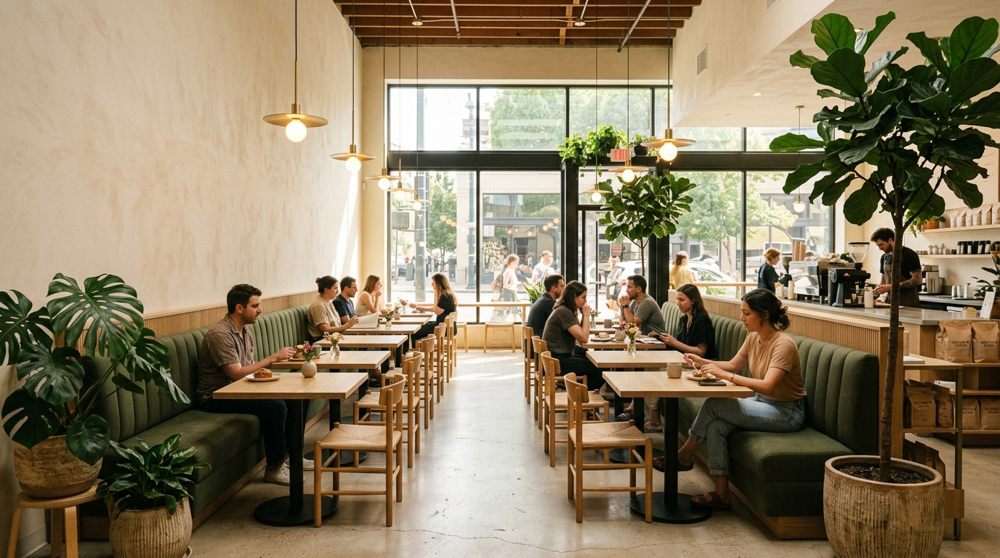
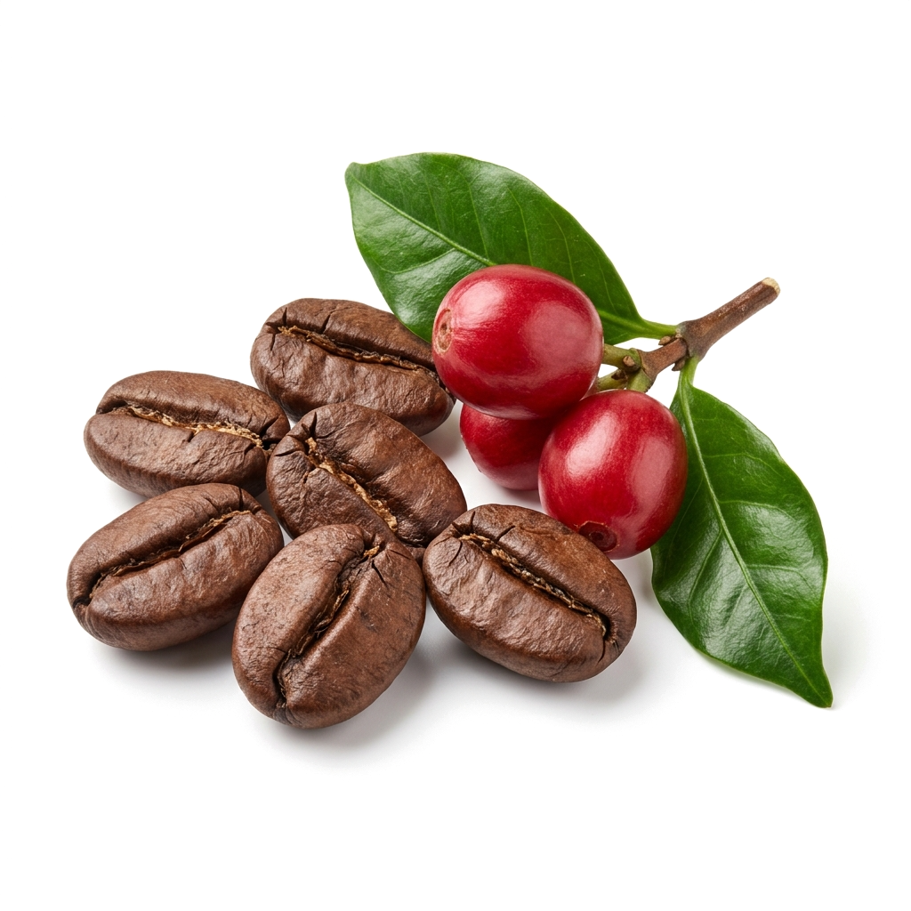
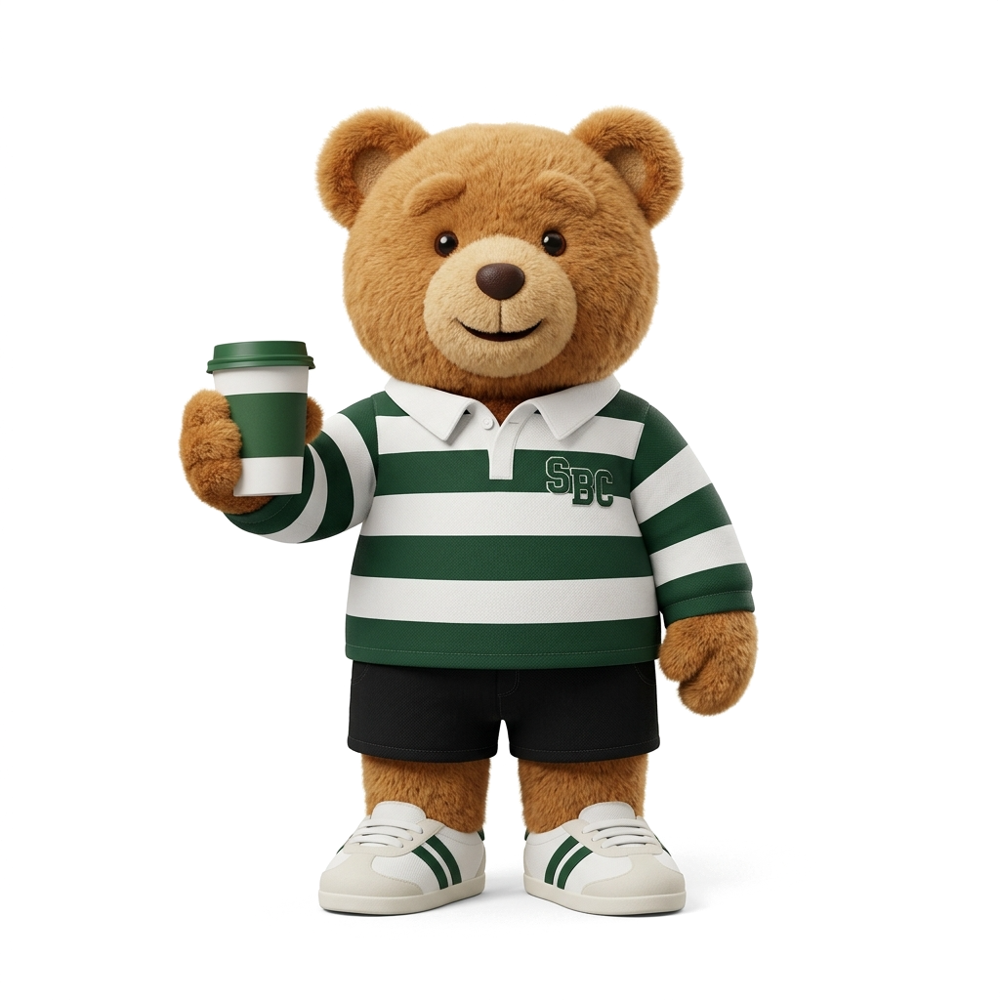
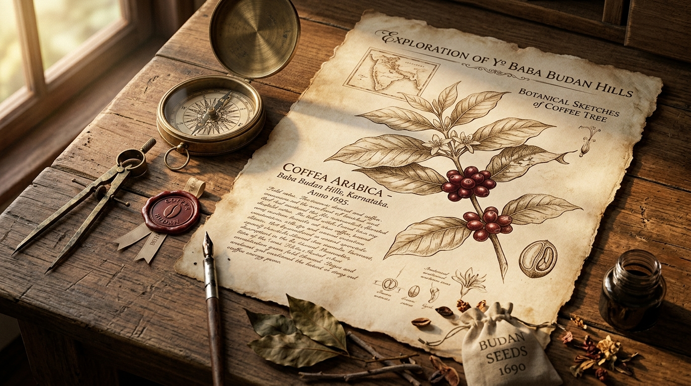

While the rest of Section-B scribbled textbook formulas, our founder Arpit sat in the back row obsessing over Arabica extraction curves, bean origins, and the roasting arts.
Tired of bitter instant powders and burnt dark-roast chains, notebook margins turned into canvas for extraction yields, grind distributions, and estate elevation notes. A stubborn conviction formed: specialty coffee shouldn't be an elitist club — it should be an honest, unhurried ritual born right here.
"Why settle for burnt robusta when shade-grown Arabica from Chikmagalur exists? Section-B deserves an authentic brew bar." — Arpit, Desk 14
Refusing dark-roast commercial robusta, we mapped certified high-altitude micro-lots in Karnataka's Chandragiri hills.
Growing slowly under native silver oak, rosewood, and jackfruit canopies, our Arabica cherries absorb mineral-rich red laterite soils and gentle monsoon mist. Rooted in the historic Baba Budan Giri range, this elevation produces naturally low acidity and dense chocolate-toffee sugars.
"1,350m elevation + shaded forest canopy = natural caramel sweetness. Real coffee craft begins with the soil." — Arpit, Desk 14
Roasting is not burning; it is an unhurried chemical romance between heat, airflow, and sucrose sugars.
Inside our cast-iron drum roaster, raw green Arabica seeds undergo the Maillard reaction. At exactly 204°C, cellular pressure fractures the bean with an audible pop — the First Crack. We drop the batch seconds later at a tailored medium-city profile, caramelizing natural sugars while preserving crisp notes of cacao, stone fruit, and biscoff.
"Drop temp: 204°C. Time: 11m 45s. Never burn the bean — respect the fruit and keep the caramel alive."
What was once a lone daydream on Desk 14 is now a physical haven where students, creators, and coffee purists belong.
We built SBC as an extension of the library back row: warm white oak, soft natural sunlight, generous charging docks, zero rushed turnover, and the rhythmic hiss of our slow bar. Paired with our fluffy mascot bear, it's an unhurried space to study, debate, read, and sip coffee, but better.
"We built the space we wished existed during our exam weeks. Pull up a chair — your section is waiting."
"October 2021 · Where the first extraction was daydreamed"
🌿
WESTERN GHATS ESTATE SOURCING
"High-altitude shade-grown Arabica from Chikmagalur's misty canopy"
204°C
FIRST CRACK · SUCROSE ALCHEMY
🔥
ROAST CHEMISTRY · FIRST CRACK
"Arresting the roast at 204°C to preserve natural caramel sugars"

☕
SBC CAMPUS SANCTUARIES
"White oak, library calm & unhurried coffee for thinkers"
DIRECT ESTATE SOURCING
The Western Ghats to Your Cup
Every bean is harvested by hand at peak ripeness, measured to tenth-of-a-gram precision, and roasted in small micro-batches every Tuesday and Friday.

PERIOD 01 · FLAVOR SCIENCE
PG. 04
ESTATE ARCHIVE · CHIKMAGALUR
Cacao & Biscoff Notes
Shade-grown under silver oak and jackfruit trees in Chikmagalur, yielding naturally sweet, low-acidity cup profiles with chocolate and speculoos warmth.
✦ Arpit's Note: "Tested during 1st period chem — 18hr slow drip yields pure cacao & speculoos. Zero bitterness."
SECTION-B LABSVERIFIED SPECIALTY
PERIOD 02 · ROAST SCIENCE LAB
PG. 07
ROAST LAB · SMALL BATCH 204°C
Medium-Roast Beans
Small-drum batch roasting timed to perfection, allowing origin volatiles to sing without harsh carbon bitterness or smoky astringency.
✦ Lab Observation: "Drum temp dialed to 204°C · First crack hits at 9:15. Smells like toasted hazelnuts & toffee."
GRADE: A+MICRO ROAST CERTIFIED
PERIOD 03 · ESPRESSO HYDRAULICS
PG. 11
SLOW BAR · 9.2 BAR EXTRACTION
The Perfect Pour
Dialed in every morning on 9-bar commercial espresso groups and Hario V60 slow-bars for velvety mouthfeel and syrupy crema.
✦ Barista Thesis: "9.2 Bar bottomless portafilter · 18g in, 36g out in 27s. Thick golden tiger-stripe crema."
92.5 PTSCUPPING SCORE
SBC OFFICIAL MASCOT

"Packaged Ice-Cold & Fresh!" ✦
DOORSTEP CRAFT DELIVERY
Sip Anywhere. Fresh on Swiggy & Zomato.
Our varsity mascot makes sure your iced lattes, Biscoff cold brews, and fresh bakes arrive ice-cold, sealed, and leak-free.
Order directly to your study desk, office, or living room through our verified delivery partners across Delhi-NCR and Bangalore.
Live extractions, slow-bar rituals, mascot moments, caramel flows, and campus energy — captured frame by frame.
01THE POUR
02THE MASCOT
03THE RITUAL
04THE DELIVERY
05THE CARAMEL
06THE CAMPUS
RESEARCH & DISPATCHES · THE JOURNAL
Dispatches From Desk 14.
Roasting thermodynamic math, Western Ghats botanical history, and craft coffee stories drafted in the margins of school notebooks.

Bean Origins⏱️ 4 min read
✒️Arpit · Founder (Desk 14)·October 2026
The 1670 Smuggled Seeds: Tracing India’s Arabica Roots to Chikmagalur
How an Indian Sufi pilgrim smuggled seven raw coffee seeds out of Yemen strapped against his chest into Karnataka’s Baba Budan Giri hills, quietly launching South Asia’s specialty coffee legacy.
“Indian shade-grown Arabica develops slowly under silver oak and jackfruit canopies, creating low-acidity profiles rich with toffee and cacao.”
The Science of 204°C: Why First-Crack Roast Profiling Unlocks Caramel & Cacao Notes
A technical exploration of the Maillard cascade, caramelized monosaccharides, and small-batch drum roasting calibrated specifically for velvety flat whites and 18-hour cold brew extractions.
“By arresting the roast curve within 90 seconds of first crack at 204°C, we preserve the sweet lactic balance that makes our coffee taste decadent with zero syrups.”
Born in Section-B: How a Back-Bench Daydream Turned into Delhi-NCR’s Craft Sanctuary
Every school has a Section-B — the place for restless dreamers whose notebooks were half chemistry homework and half blueprints for the future. From scribbling extraction math in the margins to roasting micro-lots.
“Specialty coffee shouldn’t be an elitist club with clinical white walls. It should feel like your favorite classroom bench — comfortable, welcoming, and buzzing with honest conversations.”
V60 vs. Aeropress: Demystifying Slow-Bar Extraction Geometry for Home Brewers
Conical 60-degree flow channels versus immersion pneumatic pressure mechanics: how grind distribution and water temperature alter cup clarity from the exact same single-origin bean.
“If you crave bright jasmine clarity on a warm afternoon, go V60. If you desire a punchy, velvet-smooth morning cup that holds up to oat milk, the Aeropress is your desk companion.”
Barista calibration workshops, Sunday morning 5K run clubs, campus opening jams, and artisan kitchen pop-ups — featuring live reels from @sectionbcoffee.india.
SECTION-B LABS · BULLETIN BOARD NO. 04
✎ Attendance mandatory for cupping table!☕ Dial-in 9.2 Bar · @sectionbcoffee.india
Coffee School & Workshops▶ SBC REEL · @sectionbcoffee.india
🔍 Full Reel & View
Barista Masterclass · SBC Labs
SBC Coffee School: 9.2-Bar Dial-In & Calibration
Our hands-on slow-bar workshop: dialing in single-origin Chikmagalur lots on commercial 9-bar groups, understanding TDS extraction yields, and silky microfoam texturing.
Campus Launches▶ SBC REEL · @sectionbcoffee.india
🔍 Full Reel & View
Flagship Campus · 854 Niti Khand-1
Indirapuram Sanctuary Grand Launch & Community Jam
Opening the doors to our flagship collegiate sanctuary in Indirapuram. 400+ neighborhood regulars, live slow-bar pourovers, acoustic chords, and midnight cold brews.
Campus Launches▶ SBC REEL · @sectionbcoffee.india
🔍 Full Reel & View
New Campus · Sarjapur Road
Bangalore Sarjapur Hub Launch: Taking SBC South
Section-B Coffee landing in the craft capital of South India! Freshly roasted Western Ghats Arabica, signature sculpted bear lattes, and study bench vibes.
Run Club & Meetups▶ SBC REEL · @sectionbcoffee.india
🔍 Full Reel & View
Sunday Ritual · 5K Run Club
Sunday Morning Community Run Club & Cold Brews
Every Sunday at 7 AM: neighborhood runners lace up for 5K around Indirapuram, finishing at Section-B for iced cold brews, electrolyte tonics, and sourdough truffle melts.
Coffee School & Workshops▶ SBC REEL · @sectionbcoffee.india
🔍 Full Reel & View
House Mascot · Slow Bar
Signature Sculpted Bear Latte: The Meltdown Ritual
Learning the art of Section-B's mascot bear latte: freezing double ristretto espresso bears and watching them melt over sweet condensed milk and steamed oat milk.
Kitchen & Bakes▶ SBC REEL · @sectionbcoffee.india
🔍 Full Reel & View
Artisan Bakes · Live Oven
Wood-Fired Panuozzo & Almond Viennoiserie Pop-Up
Hot out of the stone oven: authentic Italian pizza-dough sandwiches (Panuozzos) stuffed with fior di latte and wild mushrooms, paired with double-baked almond croissants.
Coffee School & Workshops▶ SBC REEL · @sectionbcoffee.india
🔍 Full Reel & View
Cupping Table · Origin Archive
Weekend Sensory Cupping: Western Ghats Terroir
Evaluating roast curves, wet vs honey processing, and identifying natural notes of jasmine, toffee, and dark cocoa with fellow specialty coffee enthusiasts.
Run Club & Meetups▶ SBC REEL · @sectionbcoffee.india
🔍 Full Reel & View
Study Sanctuary · Open till 11 PM
Desk 14 Midnight Study Sessions & Focus Blocks
Laptops glowing, acoustic tracks softly humming through the speakers, and ice clinking in sparkling espresso tonics. Section-B remains your collegiate harbor.
From morning focus blocks and post-run debriefs to unhurried weekend catchups — candid dispatches from the Class of Section-B.
5.0 ★Community Rating
100%Arabica Integrity
1,200+Daily Bench Sips
RK
Raunak Khandelwal
Class of '22 · Desk Regular
★★★★★
“This place is a total gem! Amazing ambience, super chill vibes, and the coffee is seriously next level. Every sip feels premium. And let’s talk about the sandwiches — just WOW 😍 fresh, loaded, and insanely tasty. Once you visit, you’ll definitely want to come back again and again.”
RC
Rohan Choudhary
Class of '23 · Study Hall Patron
★★★★★
“Section-B is a great place to chill with friends. The food is delicious and well-crafted — loved the burgers, wraps, and cold coffee. The ambience is cozy and welcoming, and the staff is really polite and friendly. Service is quick, and overall the vibe is perfect for casual hangouts. Definitely worth visiting again!”
ES
Esha Shiromani
Class of '21 · Remote Desk Fellow
★★★★★
“This cafe is a gem! Cozy vibe, delicious coffee, and the staff are super friendly. Perfect spot to catch up with friends or get some deep focus work done with great acoustic tunes and zero rush ☕️”
IS
Inder Sharma
Class of '23 · Slow Bar Regular
★★★★★
“Best quality food, very nice and humble staff. The ambiance is warm, welcoming, and every espresso extraction is pulled with genuine care. Section-B sets an uncompromising benchmark for craft coffee in NCR.”
PS
Pakhi S.
Class of '24 · Weekend Regular
★★★★★
“Ngl one of the best places to be cozy and spend time with friends. The team is amazing, the iced lattes are unmatched, and everything was 10/10. Definitely our regular weekend study spot.”
CLASS OF 2026
Pull Up a Bench in Section-B
Whether you're prepping for exams, writing your next chapter, or simply craving an honest cup of coffee — your desk is waiting.
Whether you're daydreaming of opening a campus sanctuary in your city, discovering your signature brew, or leaving a mark on our study desk — you're part of Section-B.
CLASSROOM EXPERIMENT 04
Find Your Section-B Persona
Answer 3 quick questions about your school daydreaming habits to reveal your custom brew match.
1. What did you daydream about in the back row?
2. What's your ideal focus sanctuary?
3. Which flavor profile makes you smile?
MATCH VERIFIED
The Back-Row Visionary
Signature Teddy Bear Biscoff Cold Brew
You turn afternoon daydreams into reality. You appreciate an unhurried 18-hour cold brew topped with velvety speculoos cream and zero bitterness.